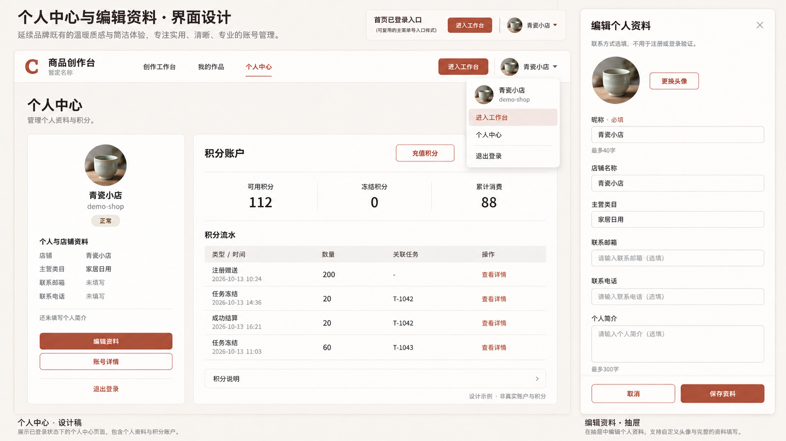
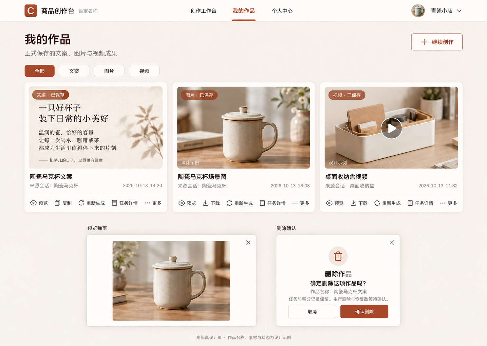
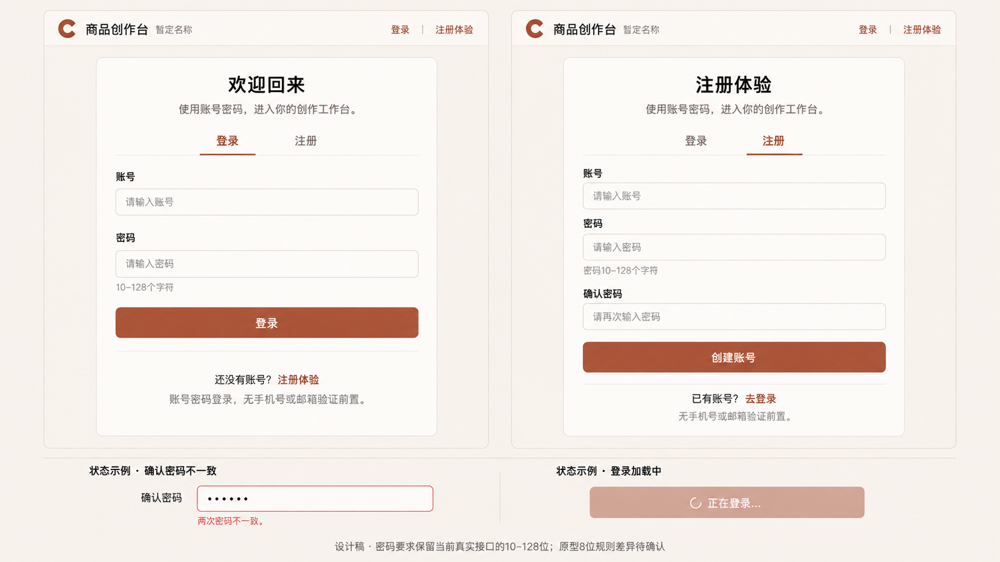
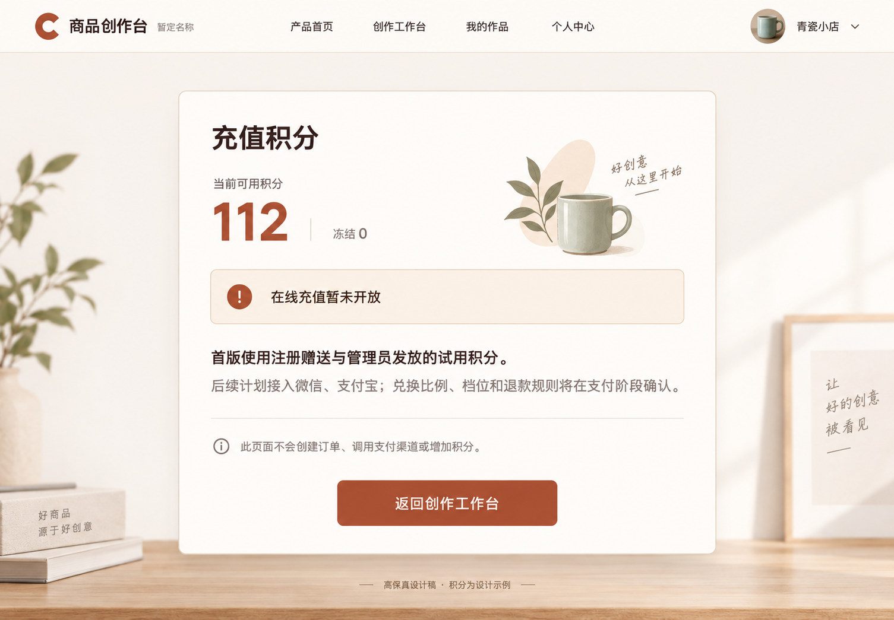
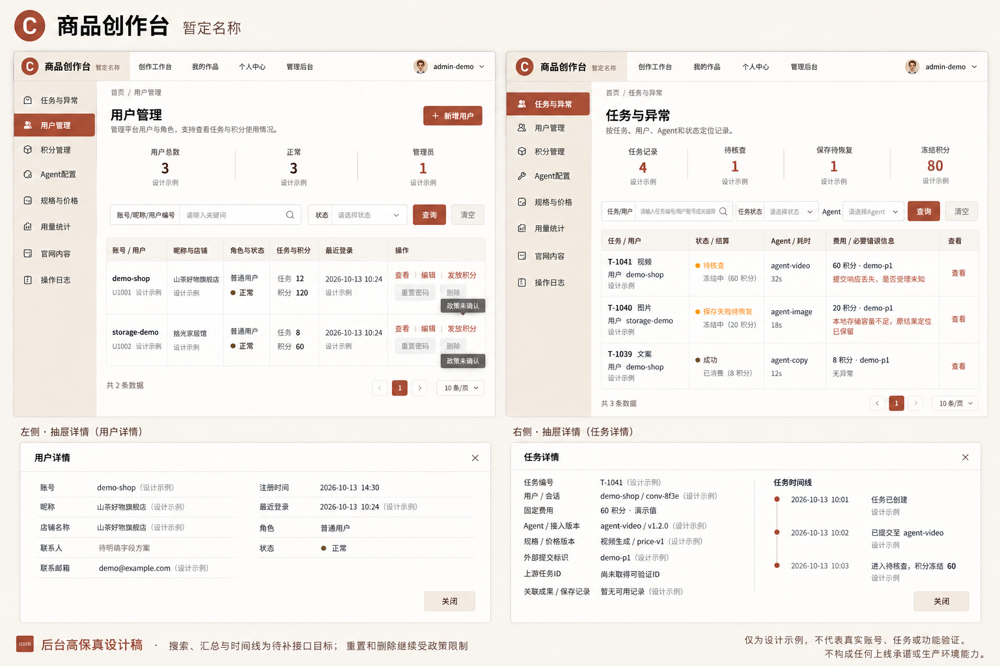
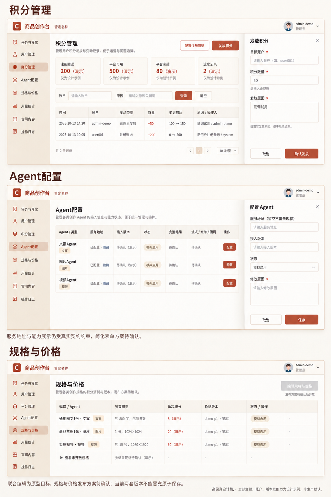
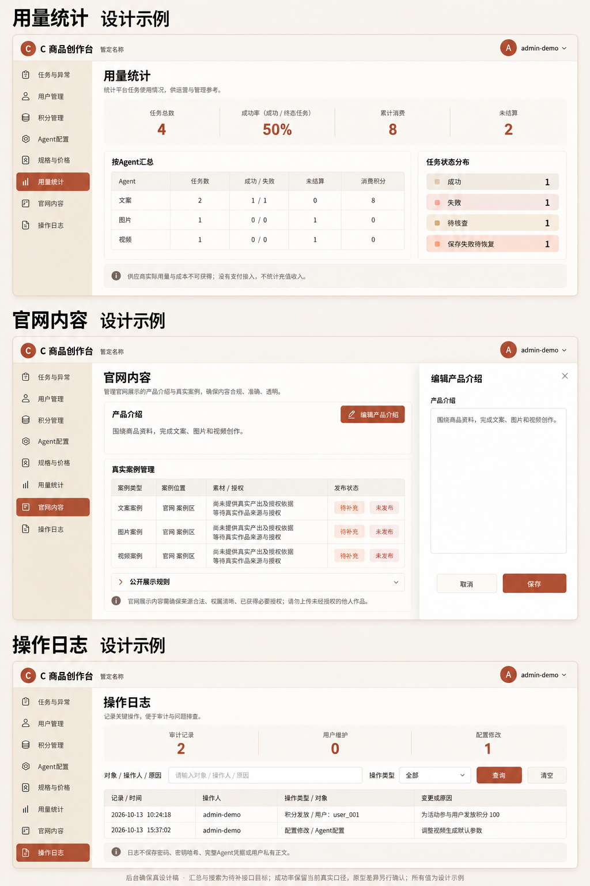
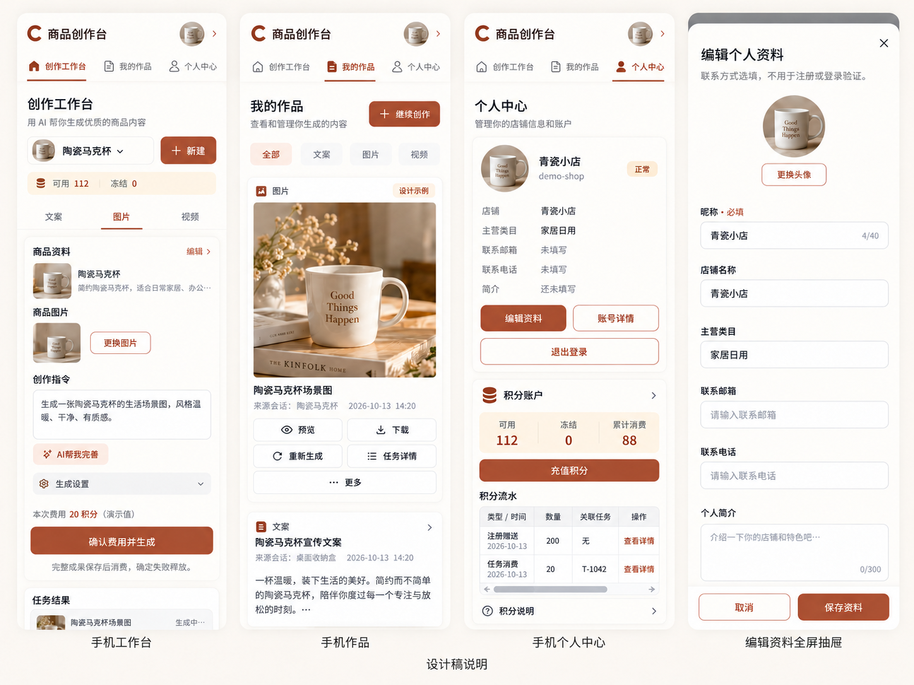

个人中心、头像菜单与编辑资料
包含首页已登录入口。账号详情与流水详情按原型保留完整只读字段；未画状态不代表删减。头像为本轮新增功能。


创作工作台
沿用已确认三列构图，文案和视频复用共享结构。实现补齐侧栏「我的作品」；作品按真实比例完整显示。结算文案为「完整成果保存后消费；确定失败释放」。

我的作品与预览、删除确认
实现补齐视频卡「更多→删除」和预览的「关闭」；文案按钮按原型为「复制文案」。危险操作使用语义红，并遵守实际删除政策。


登录与注册
密码保留当前真实接口的 10–128 位要求；原型演示的 8 位差异未被视为降低安全限制的授权。


充值说明
仅有说明和返回工作台，不增加支付订单、充值档位或支付入口。装饰商品与文案为设计示例。


后台用户、任务与异常
图中外部提交标识误用了价格版本，实际必须独立显示；实现按原型补齐注册时间、冻结积分、状态与时间线等字段。图中总数与时间为局部示例，不能用作真实查询结果。


后台积分、Agent、规格与价格
图中「服务地址留空不覆盖现有」与正式必填契约冲突，待提供改造计划。接收用户按原型下拉选择；赠送配置与发放确认仍保留。规格和价格联合编辑尚未确认。图中文字错字以原型为准。


后台用量、官网与操作日志
成功率暂保留真实接口的「成功÷终态」；原型的「成功÷全部」冲突待决定。官网既有 Agent 描述、流程、政策、授权案例与发布状态不能因图未画而删除。


手机工作台、作品、个人中心与编辑抽屉
保持原型单列顺序、可横向滚动的流水表和全屏编辑抽屉。图中文字与未画的错误／空状态仍按原型及准确字段清单实现。


7 项状态与实施边界
| 事项 | 实际状态 |
|---|---|
| 1. 首页登录后进入工作台 | 设计稿有独立入口与菜单入口，未编码 |
| 2. 用户头像 | 有上传控件设计和最小存储草案；真实上传绑定未实现 |
| 3. 头像与主流右上角交互 | 头像+昵称，菜单进入工作台/个人中心/退出，键盘与外部关闭要求已登记；未编码 |
| 4. 个人中心按原型补齐字段 | 缺四个资料字段及账号时间，准确顺序与验证长度已登记 |
| 5. 增加管理员账号 | local-admin已创建，active/admin，密码服务层登录验证；注册积分账户及一次bootstrap审计存在；浏览器验证连接中断未完成 |
| 6. 后台检查并补遗漏 | 8模块已源码核查与原型实际导航，A项可补查询投影，B项待结构许可，C项待用户改造计划 |
| 7. 非首页统一样式先设计后实现 | 9张桌面/手机视觉稿已生成并保留图中误差说明；无产品页面改动 |
个人资料的准确字段与顺序
头像为本轮新增；联系方式选填，不用于注册或登录验证。已有更长昵称、简介不得截断。
| 字段 | 控件 | 必填 | 原型长度上限 |
|---|---|---|---|
| 昵称 | text | 是 | 40 |
| 店铺名称 | text | 否 | 80 |
| 主营类目 | text | 否 | 80 |
| 联系邮箱 | 否 | 120 | |
| 联系电话 | tel | 否 | 40 |
| 个人简介 | textarea | 否 | 300 |
账号详情：用户编号 → 账号 → 角色 → 状态 → 注册时间 → 最近登录。流水详情保留原因与变更前后余额。
最小本地结构变更（已明确授权并完成）
users 新增店铺、类目、邮箱、电话、头像文件 ID、头像文件版本、最近登录时间；头像约束绑定本人文件，file_refs 增加 avatar 用途。旧资料不截断；最近登录从改动后真实成功登录开始记录，不造历史。
当前头像须防止被作为普通素材删除。旧头像和未绑定上传的清理仍按待确认政策，不承诺自动释放额度。
后台核查缺口与待提供改造计划的冲突
可利用现有库补齐：用户搜索与汇总、任务积分投影；平台流水与积分汇总；任务筛选、安全诊断与时间线；按 Agent 和状态统计；日志关键词与总量。上述查询接口已补齐，权限、真实全库汇总和搜索已做窄范围验证。当前库没有真实任务行，诊断字段由相关单测覆盖。
- 密码重置与账户恢复：D-07核验、权限与审计未确认；不能启用按钮
- 用户删除、停用与头像旧文件清理：保留现有D-09门槛；用户删除无现有事实或服务；不承诺取消上传自动释放额度
- 用量成功率口径：原型成功/全部任务；正式接口成功/终态任务，图暂采用正式口径但不等于用户确认
- 规格与价格联合保存：现有两个CAS发布接口，不能前端串联冒充原子保存
- Agent服务地址与简化配置：地址目前SecretStr且响应隐藏；重新提供必填，不实施图中留空保留方案
- 后台联系人字段：联系人不是联系电话，个人原型未要求额外联系人列
- 已有更长昵称/简介：已实现兼容：保留未编辑的旧长值，新编辑采用40/300限制，不截断原数据
- 积分发放数量：原型正整数，当前DTO允许0，不能未声明就改正式语义
- 重新生成会话起点：原型恢复当前会话草稿，真实实现新建会话；均核对输入、新报价再手动确认，不能误称原型直接收费